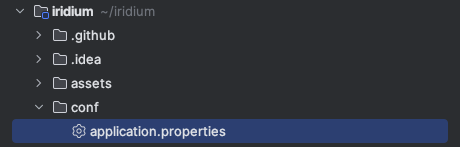

Developing with an IDE
Prerequisites
You will need:
- Node 18
- Java 17
- Maven 3.8.4 or greater
Known compatible IDEs: - Intellij - Visual Studio Code - Spring Tools Suite
Clone the repository.
$ git clone git@github.com:IridiumIdentity/iridium.git
cd into the root folder.
$ cd iridium
If you have not already, compile from source.
$ mvn clean package
When Maven has finished successfully, you will see the following.
[INFO] -----------------------------------------------------------------------
[INFO] BUILD SUCCESS
[INFO] ------------------------------------------------------------------------
[INFO] Total time: 01:08 min
[INFO] Finished at: 2023-09-11T12:54:42-07:00
[INFO] -----------------------------------------------------------------------
Setting up
Use launcher script
Current supported operating systems
- darwin (OSX) From the root folder of the repo you can execute the following command to open the project in Intellij.
$ ./tools/scripts/setup-intellij.sh
Use Intellij GUI
Iridium is a standard Maven project. Simply go to
File -> Open... then select the top level folder of the iridium project on your computer.

Copy application.properties
In an IDE, Springboot will not find the application.properties file in its default directory. To start Iridium on your IDE, copy the file to a recognized location.
Use CLI
To successfully start Iridium on your IDE, run the following command from the top of the iridium directory.
$ cp ./conf/core-application.properties ./iridium-core-server/src/main/resources
Any changes you make to application.properties will need to be updated on both files.
Use Intellij GUI
Initial location of the application.properties file:

where to paste the file:

Run Iridium
Iridium requires Springboot to run on an IDE. If you do not have Springboot in your IDE, download an extension or plugin that adds it as a run configuration.
To run Iridium on your IDE, you will need to run from Iridium.java. This can be found in the iridium-core-server directory:

Certain IDEs use different run configurations. If you are having trouble starting Iridium, see below.
- Intellij: If Intellij does not automatically recognize as a springboot application, then run as a springboot application.
- Visual Studio Code: Run as a java application.
- Spring Tools Suite/Eclipse: Run as a springboot application. Ensure your preferred openJDK instance is not in conflict with the IDE's inbuilt version.